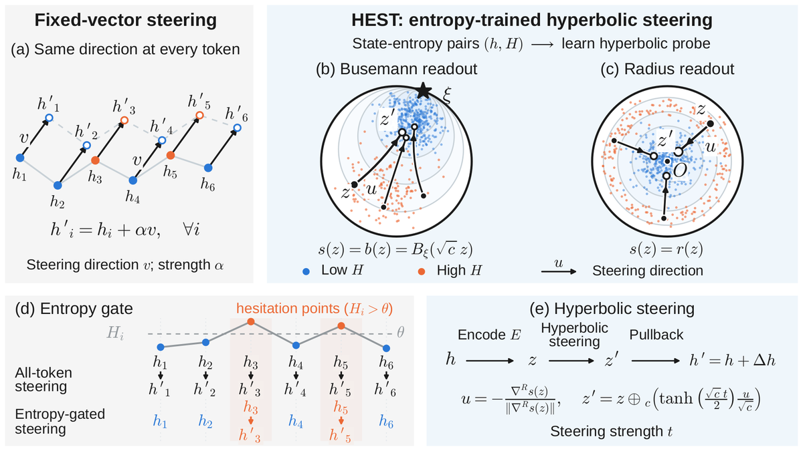

PreprintHesitation Has a Geometry: Entropy-Trained Hyperbolic Probes for Sparse Activation Steering
arXiv preprint, 2026
Steering a language model only at the tokens where it hesitates, with a hyperbolic probe trained on the model's own next-token entropy and no answer labels